Parameter analysis
Martin R. Smith martin.smith@durham.ac.uk
2025-11-07
Source:vignettes/parameter-analysis.Rmd
parameter-analysis.RmdAnalysis of parameter values and properties.
Prepare analysis environment
library("randomForest")
library("neotrans")
.meta <- Metadata()
.config <- Config()
epsBF <- log(10) # "Strong" support, per Jeffries 1939Models with a free t parameter
Review accuracy of marginal likelihood estimates
modelsT <- c("by_ki", "by_n_ki", "by_t_ki", "by_nt_ki", "rm_by_t_ki")
marginals <- GetMarginals(KiProjects(), modelsT)
stdErr <- attr(marginals, "stdErr")
mds <- MarginalDiffs(KiProjects(), modelsT)
hist(abs(mds), breaks = ceiling(max(abs(mds), na.rm = TRUE) * 2), xpd = NA)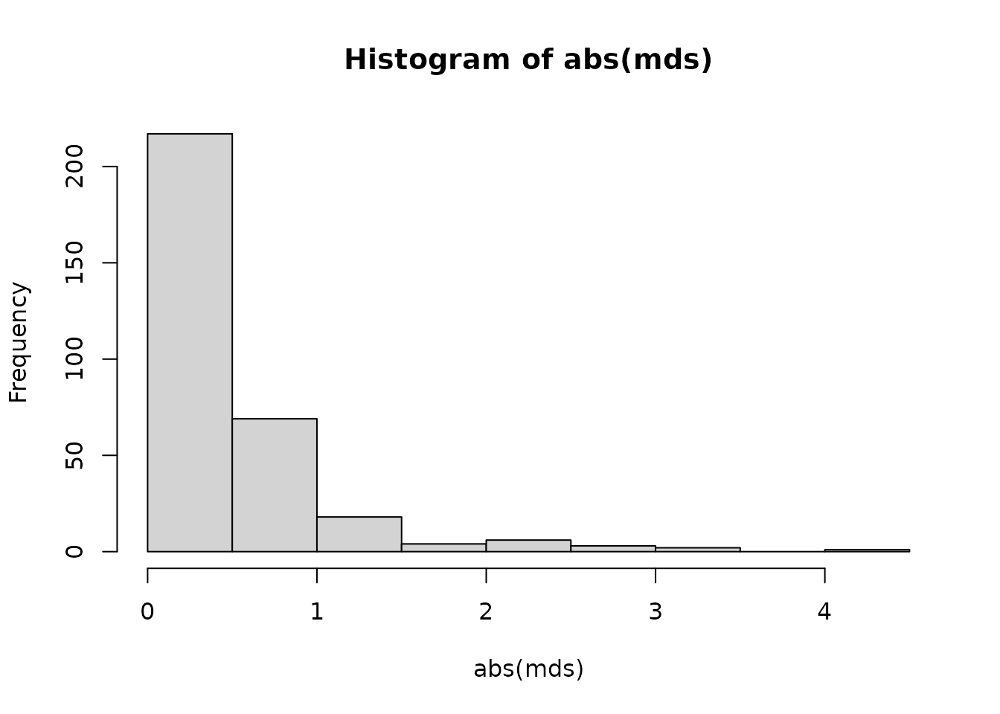
plot(stdErr, mds, frame.plot = FALSE, xlab = "Standard error of estimate",
ylab = "Difference, stepping stone vs path sampling estimates",
col = ModelCol(modelsT), pch = 16)
abline(h = 0, lty = "dashed", col = "grey70")
abline(0, 1, lty = "dashed", col = "grey70")
legend("topleft", ModelLabel(modelsT), pch = 16, col = ModelCol(modelsT),
bty = "n")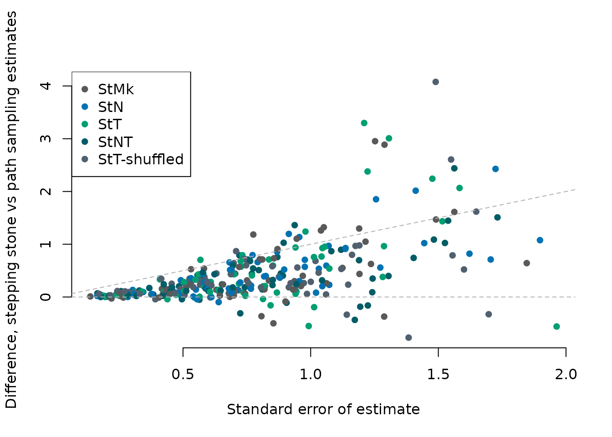
When is a partitioned model preferred?
part <- EvaluatePartitioning(marginals)## by_t is >eps better than unpartitioned in 15 / 64 projects.## by_t is >eps better than rm_by_t in 13 / 15 of these.## rm_by_t is best model by >eps in 3 / 64
tSupport <- part["by_t_ki", ] - part["by_ki", ]
tErr <- .DiffErr(stdErr["by_t_ki", ], stdErr["by_ki", ])
tFitsBest <- .OutwithError(tSupport, tErr)
sum(tFitsBest)## [1] 15
tCol <- hcl.colors(6, "Red-Green")[c(2, 2, 5, 5)][
cut(tSupport, breaks = c(-Inf, -epsBF, 0, epsBF, Inf))]
par(mar = c(4, 4, 0.4, 0.4))
plot(.meta$nChar["trans", ], .meta$nChar["neo", ],
pch = ifelse(tFitsBest | .OutwithError(-tSupport, tErr), 16, 1),
col = tCol,
xlab = "Transformational characters", ylab = "Neomorphic characters",
log = "xy",
asp = 1, frame.plot = FALSE)
abline(0, 1, lty = "dashed")
legend("topleft", bty = "n", title = expression(italic(t) ~ "parameter:"),
legend = c("Free preferred",
"Fixed preferred",
paste0("BF > ", signif(epsBF, 3)),
paste0("BF < ", signif(epsBF, 3))),
pch = c(15, 15, 16, 1),
pt.cex = 1.2,
col = c(hcl.colors(6, "Red-Green")[5],
hcl.colors(6, "Red-Green")[2],
"grey10", "grey10"))
# Compare estimated values of t
bestTModel <- ifelse(marginals["by_t_ki", ] > marginals["by_nt_ki", ],
"by_t_ki", "by_nt_ki")
tProjects <- names(bestTModel)[!is.na(bestTModel)]
# Estimated value of t using the best available stationary model
stationaryT <- sapply(tProjects, function(pID) {
exRes <- ExistingResults(pID, bestTModel[[pID]], checkRemote = FALSE)
if (exRes[["convergence"]][["ess"]] < .config$essThreshold) {
message("Extending run for ", pID, "_", bestTModel[pID])
MakeSlurm(pID, bestTModel[pID], ml = FALSE)
}
res <- exRes[["parameters"]][, "rate_neo"]
# partition_rate := [ rate_neo / (1 + rate_neo), (1 / (1 + rate_neo)) ]
# MS defines t = rate_t / rate_n
if (is.null(res)) {
message("Need results for ", pID, "_", bestTModel[pID])
RevBayes(pID, bestTModel[pID])
MakeSlurm(pID, bestTModel[pID], ml = FALSE)
setNames(rep(NA, 6), c("2.5%", "25%", "50%", "75%", "97.5%", "mad"))
} else {
# Convert from rate_neo to rate_trans
1 / res
}
})
shapiro.test(log(stationaryT["50%", ]))##
## Shapiro-Wilk normality test
##
## data: log(stationaryT["50%", ])
## W = 0.96834, p-value = 0.09911##
## One Sample t-test
##
## data: log(stationaryT["50%", ])
## t = 7.2276, df = 63, p-value = 8.008e-10
## alternative hypothesis: true mean is not equal to 0
## 95 percent confidence interval:
## 0.6826026 1.2043076
## sample estimates:
## mean of x
## 0.9434551## [1] 2.47## [1] 2.39## [1] 7.22## [1] 2.57## [1] 1.044
# Because of the conversion, the 2.5%ile is "high" and the 97.5%ile is "low"
message(
"Median: ", signif(median(stationaryT["50%", ], na.rm = TRUE), 3),
" (= 1/", signif(1 / median(stationaryT["50%", ], na.rm = TRUE), 3),
"), mad ", signif(mad(stationaryT["50%", ], na.rm = TRUE), 3),
"; LogMean: ", signif(exp(mean(log(stationaryT["50%", ]), na.rm = TRUE)), 3),
", sd ", signif(exp(sd(log(stationaryT["50%", ]), na.rm = TRUE)), 3)
)## Median: 2.47 (= 1/0.405), mad 1.7; LogMean: 2.57, sd 2.84
tNotOne <- stationaryT["97.5%", ] > 1 | stationaryT["2.5%", ] < 1
message("Different from 1: ", sum(tNotOne, na.rm = TRUE),
" / ", sum(!is.na(tNotOne)), ": ",
sum(stationaryT["97.5%", ] > 1, na.rm = TRUE), " > 1; ",
sum(stationaryT["2.5%", ] < 1, na.rm = TRUE), " < 1")## Different from 1: 36 / 64: 34 > 1; 2 < 1
ntBest <- (bestTModel == "by_nt_ki")[!is.na(bestTModel)]
tModelBF <- setNames(numeric(length(tProjects)), tProjects)
tModelBF[ntBest] <- marginals["by_nt_ki", tProjects[ntBest]] -
marginals["by_n_ki", tProjects[ntBest]]
tModelBF[!ntBest] <- marginals["by_t_ki", tProjects[!ntBest]] -
marginals["by_ki", tProjects[!ntBest]]
tColBin <- ifelse(tModelBF < 0,
ifelse(tModelBF < pmin(-epsBF, -tErr), 1, 2),
ifelse(tModelBF > pmax(epsBF, tErr), 4, 3))
tCol <- hcl.colors(6, "Red-Green")[2:5][tColBin]
{
par(mfrow = c(1, 1))
plot(stationaryT["50%", ], tModelBF,
xlab = expression("Inferred" ~ italic("t")), # under best stationary model
ylab = "log(Model BF)", xpd = NA,
frame.plot = FALSE, pch = 4, log = "x")
confidenceCol <- gray.colors(256)
iqr <- log(stationaryT["75%", ]) - log(stationaryT["25%", ])
segments(stationaryT["2.5%", ], tModelBF, stationaryT["97.5%", ], xpd = NA,
col = confidenceCol[cut(iqr, breaks = 256)])
points(stationaryT["50%", ], tModelBF, col = tCol,
pch = 4, cex = 1.5, lwd = 2)
abline(v = 1, lty = 2)
EpsLine()
}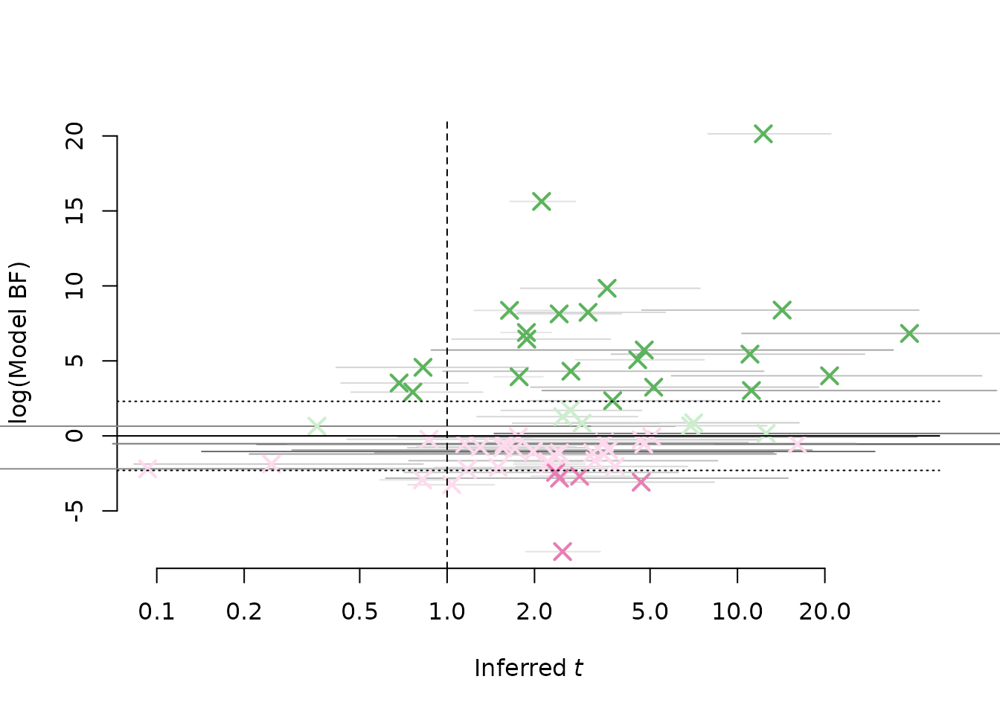
Predict which projects will favour a free t
# Can we predict which projects will benefit from a free t parameter?
tProj <- names(tSupport)
tMeta <- data.frame(
tSupport,
nChar = colSums(.meta$nChar[, tProj]),
nTrans = .meta$nChar["trans", tProj],
nNeo = .meta$nChar["neo", tProj],
logNTRatio = log(.meta$nChar["neo", tProj] / .meta$nChar["trans", tProj]),
charPerTax = colSums(.meta$nChar[, tProj]) / .meta$nTaxa[tProj],
taxon = .meta$taxon[tProj],
rank = .meta$rank[tProj],
nTaxa = .meta$nTaxa[tProj],
tValue = log(t(stationaryT[, tProj]))
)
tPredictors <- c("nChar", "logNTRatio", "charPerTax", "taxon", "rank", "nTaxa",
"tValue.50.")
vsurfBF <- VSURF::VSURF(tMeta[, tPredictors], tSupport, verbose = FALSE)
predBF <- tPredictors[vsurfBF[["varselect.pred"]]]
if (!length(predBF)) {
predBF <- tPredictors[vsurfBF[["varselect.interp"]]]
}
cat(paste0(predBF, collapse = ", "))## tValue.50., charPerTax, logNTRatio
rfBF <- randomForest(tMeta[, predBF, drop = FALSE], tSupport,
ntree = 10000, importance = TRUE)
importance(rfBF)## %IncMSE IncNodePurity
## tValue.50. 71.01203 424.4242
## charPerTax 38.02196 371.7210
## logNTRatio 56.94737 367.3868
varImpPlot(rfBF, frame.plot = FALSE)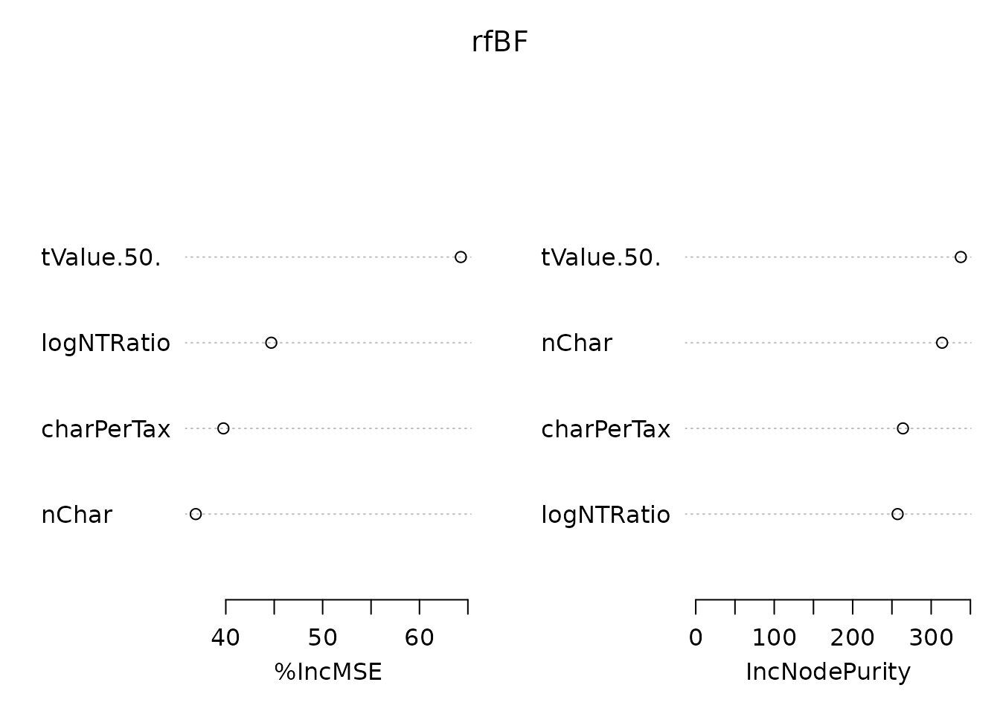
nPred <- length(predBF)
par(mfrow = c(nPred, 2))
for (predictor in predBF) {
partialPlot(rfBF, tMeta[, tPredictors], as.character(predictor),
rug = TRUE, frame.plot = FALSE, main = "",
xlab = Decrypt(predictor),
ylab = "Impact on predicted log(BF)")
}Does metadata predict the value of t?
# Can we predict the value of t from the metadata?
metaT <- tMeta[!is.na(tMeta[, "tValue.50."]), ]
t50 <- metaT[, "tValue.50."]
summary(t50)## Min. 1st Qu. Median Mean 3rd Qu. Max.
## -2.3752 0.4841 0.9036 0.9435 1.5183 3.6671
sd(t50)## [1] 1.044276
shapiro.test(t50)##
## Shapiro-Wilk normality test
##
## data: t50
## W = 0.96834, p-value = 0.09911
t.test(t50)##
## One Sample t-test
##
## data: t50
## t = 7.2276, df = 63, p-value = 8.008e-10
## alternative hypothesis: true mean is not equal to 0
## 95 percent confidence interval:
## 0.6826026 1.2043076
## sample estimates:
## mean of x
## 0.9434551
vsurfT <- VSURF::VSURF(metaT[, setdiff(tPredictors, "tValue.50.")], t50,
verbose = FALSE)
predT <- tPredictors[vsurfT[["varselect.pred"]]]
cat(paste(predT, collapse = ", "))## logNTRatio, nTaxa
# Surprisingly, yes. Why might this be?
rfT <- randomForest(metaT[, predT, drop = FALSE], t50, ntree = 10000,
importance = TRUE)
varImpPlot(rfT, frame.plot = FALSE)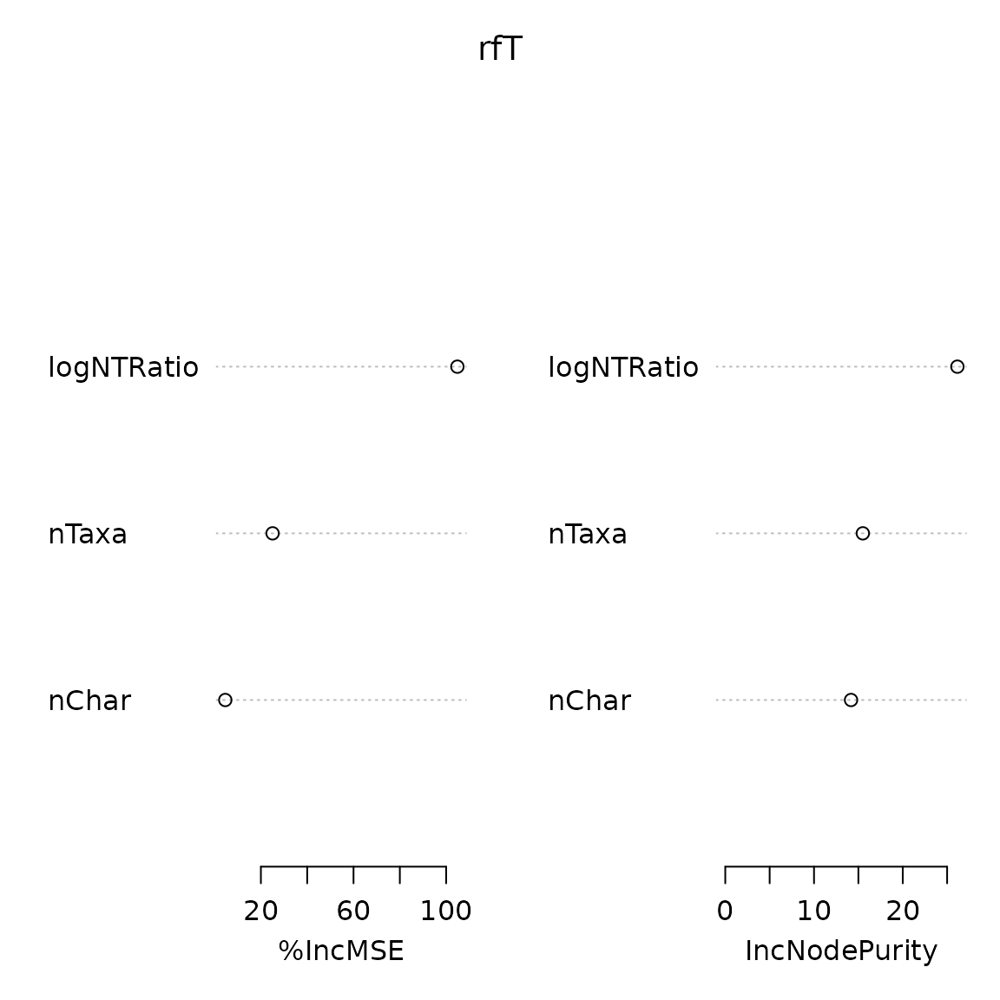
par(mfrow = c(2, 1))
partialPlot(rfT, metaT, logNTRatio)
plot(t50 ~ metaT$logNTRatio, frame.plot = FALSE)
abline(h = 1, lty = "dotted")
partialPlot(rfT, metaT, nTaxa)
plot(t50 ~ metaT$nTaxa, frame.plot = FALSE)
abline(h = 1, lty = "dotted")
boxplot(part["by_t_ki", ] - part["by_ki", ] ~ .meta$taxon[colnames(part)], las = 2,
frame.plot = FALSE, cex = 0.8, ylab = "by_t > by", notch = TRUE,
ylim = c(-14, 16), eps = NA,
col = TaxonCol())## Warning in (function (z, notch = FALSE, width = NULL, varwidth = FALSE, : some
## notches went outside hinges ('box'): maybe set notch=FALSE
EpsLine()
tPref <- part["by_t_ki", ] - part["by_ki", ]
plot(.meta$nTaxa[names(tPref)], tPref,
log = "x",
frame.plot = FALSE, xlab = "Number of taxa", ylab = "by_t > by")
EpsLine()
points(.meta$nTaxa[names(tPref)], part["by_t_ki", ] - part["rm_by_t_ki", ],
col = 2, pch = 3)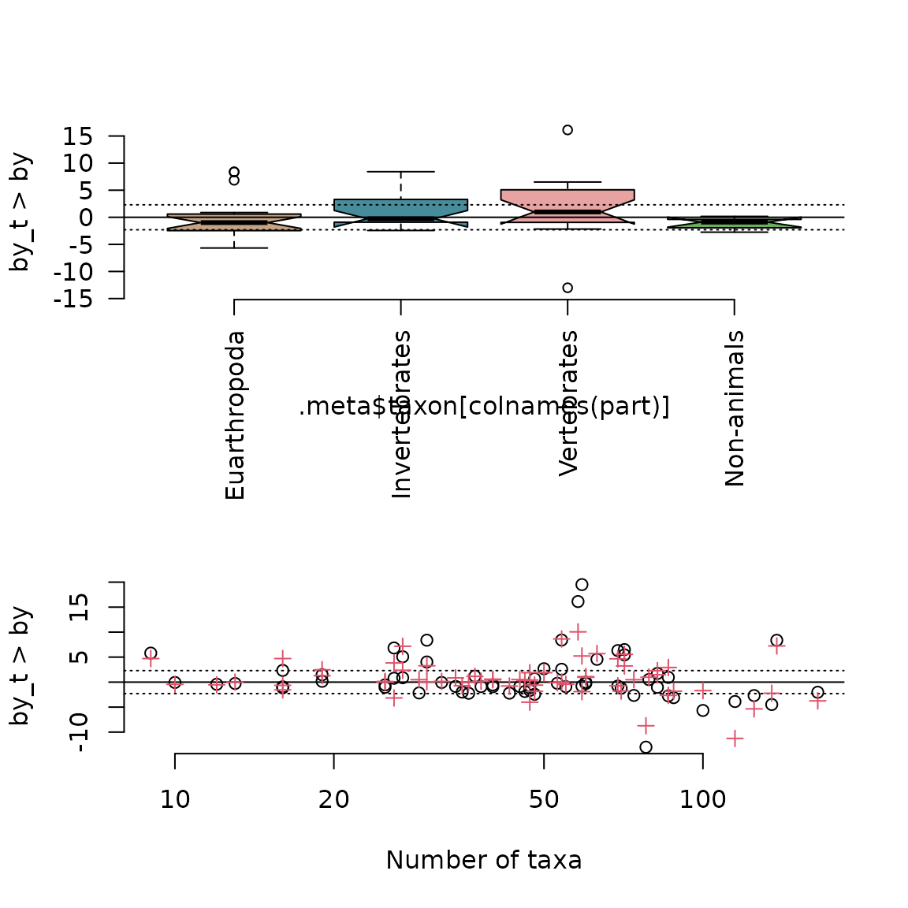
Free n parameter (gain to loss ratio)
modelsN <- c("by_ki",
"by_n_ki", "by_nn_ki", "by_t_ki", "by_nt_ki",
"ns_ki", "ns_n_ki", "ns_nt_ki",
"rm_by_n_ki", "rm_by_nt_ki")
marginals <- GetMarginals(KiProjects(), modelsN)
stdErr <- attr(marginals, "stdErr")
mds <- MarginalDiffs(KiProjects(), modelsN)
hist(abs(mds), breaks = ceiling(max(abs(mds), na.rm = TRUE) * 2), xpd = NA)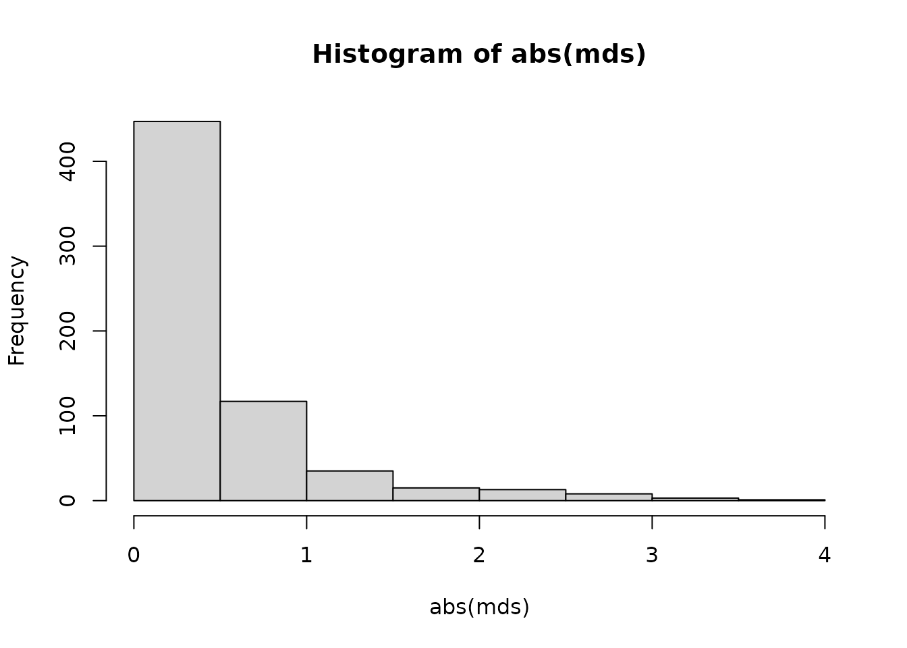
plot(stdErr, mds, frame.plot = FALSE, xlab = "Standard error of estimate",
ylab = "Difference, stepping stone vs path sampling estimates",
col = ModelCol(modelsN), pch = 16)
abline(h = 0, lty = "dashed", col = "grey70")
abline(0, 1, lty = "dashed", col = "grey70")
legend("topleft", ModelLabel(modelsN), pch = 16, col = ModelCol(modelsN),
bty = "n")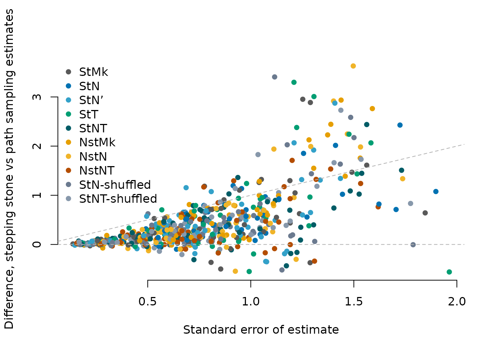
# Number in which StN outperforms StMk
.ErrCompare <- function(mod1, mod2, eps = epsBF) {
.OutwithError(marginals[mod1, ] - marginals[mod2, ],
.DiffErr(stdErr[mod1, ], stdErr[mod2, ]), eps)
}
stnWins <- .ErrCompare("by_n_ki", "by_ki")
message("outperforms StMk in ", sum(stnWins), " of ", dim(marginals)[[2]])## outperforms StMk in 24 of 64
# ... and number in which StN outperforms StN-shuffled
stnBeatsRandom <- stnWins & .ErrCompare("by_n_ki", "rm_by_n_ki")
message(sum(stnBeatsRandom, na.rm = TRUE), " of these ",
sum(stnWins & !is.na(stnBeatsRandom)))## 17 of these 24
message(
"StMk was preferred in ",
# Number in which StMk outperforms StN
sum(.ErrCompare("by_n_ki", "by_ki")),
" of ", # Number of datasets for which data are available
sum(!is.na(marginals["by_n_ki", ] < marginals["by_ki", ])),
" datasets.")## StMk was preferred in 24 of 64 datasets.
stNt <- .ErrCompare("by_nt_ki", "by_t_ki")
message(
"StNT outperforms StT in ", sum(stNt), "/", sum(!is.na(stNt)),
" datasets, and underperforms in ",
sum(.ErrCompare("by_t_ki", "by_nt_ki")))## StNT outperforms StT in 27/64 datasets, and underperforms in 3
stnWithT <- .ErrCompare("by_nt_ki", "by_t_ki") & .ErrCompare("by_t_ki", "by_ki")
message("StNT beats StT in ", sum(stnWithT), " of ",
sum(.ErrCompare("by_t_ki", "by_ki")),
" cases where free t param is supported")## StNT beats StT in 8 of 15 cases where free t param is supported
EvaluateMk2 <- function(marginals, stdErr, epsBF = 1, suffix = "_ki") {
models <- c("by", "by_n", "by_t", "by_nt") |> paste0(suffix) |>
setNames(c("base", "n", "t", "nt"))
mk2 <- ModelBF(marginals, models)
baseMarginal <- marginals[models[c("base", "t")], ]
colSelect <- !is.na(baseMarginal[1, ])
baseRow <- apply(baseMarginal[, colSelect], 2, which.max)
baseModel <- models[c("base", "t")[baseRow]]
nModel <- models[c("n", "nt")[baseRow]]
baseMarginal <- marginals[cbind(baseModel, names(baseRow))]
nMarginal <- marginals[cbind(nModel, names(baseRow))]
baseErr <- stdErr[cbind(baseModel, names(baseRow))]
nErr <- stdErr[cbind(nModel, names(baseRow))]
nImprovement <- nMarginal - baseMarginal
good <- .OutwithError(nImprovement, .DiffErr(baseErr, nErr), epsBF)
bad <- .OutwithError(-nImprovement, .DiffErr(baseErr, nErr), epsBF)
ugly <- !good & !bad
message("Mk2 improves in ", sum(good, na.rm = TRUE),
", indifferent in ", sum(ugly, na.rm = TRUE),
"; deleterious in ", sum(bad, na.rm = TRUE), " / ",
sum(!is.na(nImprovement)), " projects.")
invisible(structure(
nImprovement,
names = names(baseRow),
nBetter = good,
nWorse = bad,
err = nErr))
}
mk2 <- EvaluateMk2(marginals, stdErr, eps = epsBF)## Mk2 improves in 25, indifferent in 33; deleterious in 6 / 64 projects.
betterNames <- names(mk2)[which(attr(mk2, "nBetter"))]
rm <- marginals[c("by_n_ki", "rm_by_n_ki"), betterNames]
rm <- rm[, colSums(is.na(rm)) == 0]
message(sum(rm[2, ] < rm[1, ]), " (",
sum(.OutwithError(rm[2, ] - rm[1, ],
.DiffErr(stdErr["by_n_ki", colnames(rm)],
stdErr["rm_by_n_ki", colnames(rm)]))),
" by eps) / ", ncol(rm), " projects prefer by_n_ki to rm_by_n_ki")## 22 (2 by eps) / 25 projects prefer by_n_ki to rm_by_n_ki
# Equivalent numbers under non-stationary model
# Number in which NstN outperforms NstMk
nstnWins <- .ErrCompare("ns_n_ki", "ns_ki")
length(which(nstnWins))## [1] 28## [1] 64## [1] 0
# Number of datasets for which data are available
sum(!is.na(marginals["ns_n_ki", ] < marginals["ns_ki", ]))## [1] 64
# Summary: very similar, with slightly more preferring free n
mk2Col <- hcl.colors(6, "Red-Green")[c(2, 2, 5, 5)][
cut(mk2, breaks = c(-Inf, -epsBF, 0, epsBF, Inf))]
plot(.meta$nChar["neo", names(mk2)] / .meta$nChar["trans", names(mk2)], mk2,
log = "x", col = mk2Col, pch = 3,
frame.plot = FALSE, xlab = "Neo:Trans", ylab = "Mk2 BF")
EpsLine()
abline(v = 1)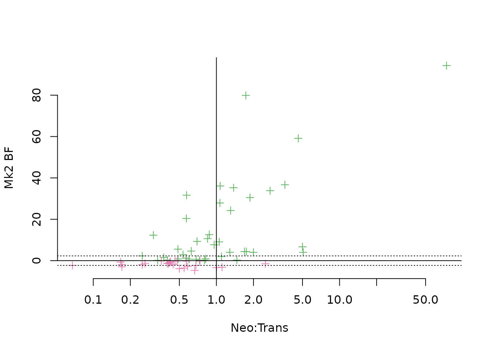
plot(colSums(.meta$nChar[, names(mk2)]), mk2,
log = "x", col = mk2Col, pch = 3,
frame.plot = FALSE, xlab = "Number of characters", ylab = "Mk2 BF")
EpsLine()
abline(v = 1)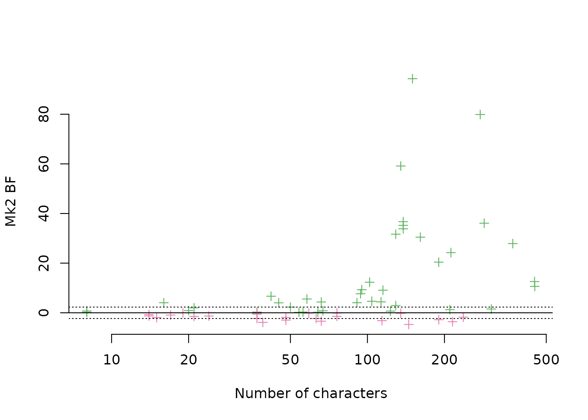
plot(.meta$nTaxa[names(mk2)], mk2,
log = "x", col = mk2Col, pch = 3,
frame.plot = FALSE, xlab = "Number of taxa", ylab = "Mk2 BF")
EpsLine()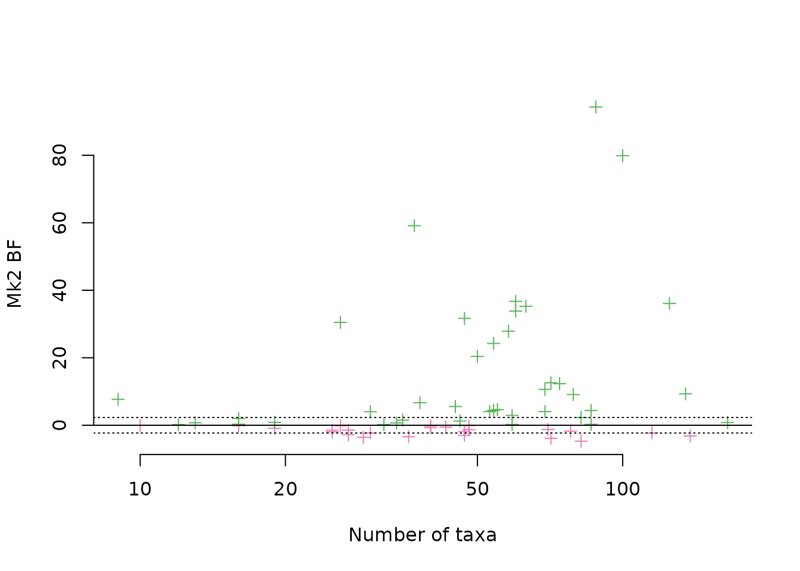
EvaluateNonStat <- function(marginals, se, epsBF = 1, suffix = "_ki") {
models <- c("by", "by_n", "ns", "ns_n") |> paste0(suffix) |>
setNames(c("s", "sn", "ns", "nsn"))
ml <- ModelBF(marginals, models)
ns_helps <- .OutwithError(ml[models[["ns"]], ] - ml[models[["s"]], ],
.DiffErr(se[models[["ns"]], ], se[models[["s"]], ]),
epsBF)
ns_hinders <- .OutwithError(ml[models[["s"]], ] - ml[models[["ns"]], ],
.DiffErr(se[models[["ns"]], ], se[models[["s"]], ]),
epsBF)
mk2_helps <- .OutwithError(ml[models[["sn"]], ] - ml[models[["s"]], ],
.DiffErr(se[models[["sn"]], ], se[models[["s"]], ]),
epsBF)
mk2_hinders <- .OutwithError(ml[models[["s"]], ] - ml[models[["sn"]], ],
.DiffErr(se[models[["s"]], ], se[models[["sn"]], ]),
epsBF)
both_beat_ns <- ns_helps & .OutwithError(
ml[models[["nsn"]], ] - ml[models[["ns"]], ],
.DiffErr(se[models[["nsn"]], ], se[models[["ns"]], ]),
epsBF)
both_beat_mk2 <- mk2_helps & .OutwithError(
ml[models[["nsn"]], ] - ml[models[["sn"]], ],
.DiffErr(se[models[["nsn"]], ], se[models[["sn"]], ]),
epsBF)
message("Non-stat improves in ", sum(ns_helps), "/", ncol(ml),
" (worse in ", sum(ns_hinders),
"), of which Mk2 further improves ", sum(both_beat_ns), ".")
message("Mk2 improves in ", sum(mk2_helps), "/", ncol(ml),
" (worse in ", sum(mk2_hinders),
"), of which Non-stat further improves ", sum(both_beat_mk2), ".")
invisible(ml)
}
EvaluateNonStat(marginals, stdErr, eps = epsBF)## Non-stat improves in 16/64 (worse in 3), of which Mk2 further improves 10.## Mk2 improves in 24/64 (worse in 4), of which Non-stat further improves 6.
ns <- marginals["ns_ki", ] - marginals["by_ki", ]
ns_n <- marginals["ns_n_ki", ] - marginals["by_ki", ]
by_n <- marginals["by_n_ki", ] - marginals["by_ki", ]
plot(ns ~ by_n, asp = 1, frame.plot = FALSE)
EpsLine(diag = TRUE)
plot(ns_n ~ by_n, asp = 1, frame.plot = FALSE,
xlab = "Mkn - Mk", ylab = "ns_n - Mk")
EpsLine(vert = TRUE, diag = TRUE)
plot(marginals["ns_n_ki", ] - marginals["ns_ki", ],
marginals["by_n_ki", ] - marginals["by_ki", ],
xlab = "+n, non-stat", ylab = "+n, stationary",
asp = 1, frame.plot = FALSE)
EpsLine(vert = TRUE, diag = TRUE)
# Compare estimated values of n
bestNModel <- ifelse(marginals["by_n_ki", ] > marginals["by_nt_ki", ],
"by_n_ki", "by_nt_ki")
nProjects <- names(bestNModel)[!is.na(bestNModel)]
# Estimated value of n using the best available stationary model
# Strictly, this vector stores 1 / n, i.e. rate_loss not rate_gain
stationaryN <- sapply(nProjects, function(pID) {
res <- ExistingResults(pID, bestNModel[pID],
checkRemote = FALSE)[["parameters"]][, "rate_loss"]
if (is.null(res)) {
message("Need results for ", pID, "_", bestNModel[pID])
RevBayes(pID, bestNModel[pID])
MakeSlurm(pID, bestNModel[pID], ml = FALSE)
}
res %||% setNames(rep(NA, 6), c("2.5%", "25%", "50%", "75%", "97.5%", "mad"))
})
nNotOne <- stationaryN["97.5%", ] < 1 | stationaryN["2.5%", ] > 1
# convert 1 / rate_loss yields rate_gain
n50 <- 1 / stationaryN["50%", ]
exp(summary(log(n50)))## Min. 1st Qu. Median Mean 3rd Qu. Max.
## 0.06625 0.30510 0.49713 0.46422 0.73958 3.85226
# vioplot::vioplot(log(t50), log(n50),
# names = c("log(t)", "log(n)"),
# frame.plot = FALSE)
shapiro.test(log(n50))##
## Shapiro-Wilk normality test
##
## data: log(n50)
## W = 0.9854, p-value = 0.6508##
## One Sample t-test
##
## data: log(n50)
## t = -7.9572, df = 63, p-value = 4.239e-11
## alternative hypothesis: true mean is not equal to 0
## 95 percent confidence interval:
## -0.9601196 -0.5746763
## sample estimates:
## mean of x
## -0.7673979## [1] 0.7715268
message(
"LogMean: ", signif(exp(mean(log(n50), na.rm = TRUE)), 3),
", sd ", paste0(signif(exp(mean(log(n50)) + c(-1, 1) * sd(log(n50), na.rm = TRUE)), 3), collapse = ", "),
"; Median: ", signif(median(n50, na.rm = TRUE), 3),
", mad ", signif(mad(n50, na.rm = TRUE), 3)
)## LogMean: 0.464, sd 0.215, 1; Median: 0.497, mad 0.316
message("Different from 1: ", sum(nNotOne, na.rm = TRUE),
" / ", sum(!is.na(nNotOne)), ": ",
sum(1 / stationaryN["97.5%", ] > 1, na.rm = TRUE), " > 1; ",
sum(1 / stationaryN["2.5%", ] < 1, na.rm = TRUE), " < 1")## Different from 1: 37 / 64: 2 > 1; 35 < 1
ntBest <- (bestNModel == "by_nt_ki")[!is.na(bestNModel)]
nModelBF <- setNames(numeric(length(nProjects)), nProjects)
nModelBF[ntBest] <- marginals["by_nt_ki", nProjects[ntBest]] -
marginals["by_t_ki", nProjects[ntBest]]
nModelBF[!ntBest] <- marginals["by_n_ki", nProjects[!ntBest]] -
marginals["by_ki", nProjects[!ntBest]]
nCol <- hcl.colors(6, "Red-Green")[2:5][
cut(nModelBF, breaks = c(-Inf, -epsBF, 0, epsBF, Inf))]
{
par(mfrow = c(1, 1))
plot(stationaryN["50%", ], nModelBF,
xlab = "Inferred 'n': best stationary model",
ylab = "log(Model BF)", xpd = NA,
frame.plot = FALSE, pch = 4, log = "x")
confidenceCol <- gray.colors(256)
iqr <- log(stationaryN["75%", ]) - log(stationaryN["25%", ])
segments(stationaryN["2.5%", ], nModelBF, stationaryN["97.5%", ], xpd = NA,
col = confidenceCol[cut(iqr, breaks = 256)])
points(stationaryN["50%", ], nModelBF, col = nCol,
pch = 4, cex = 1.5, lwd = 2)
abline(v = 1, lty = 2)
EpsLine()
}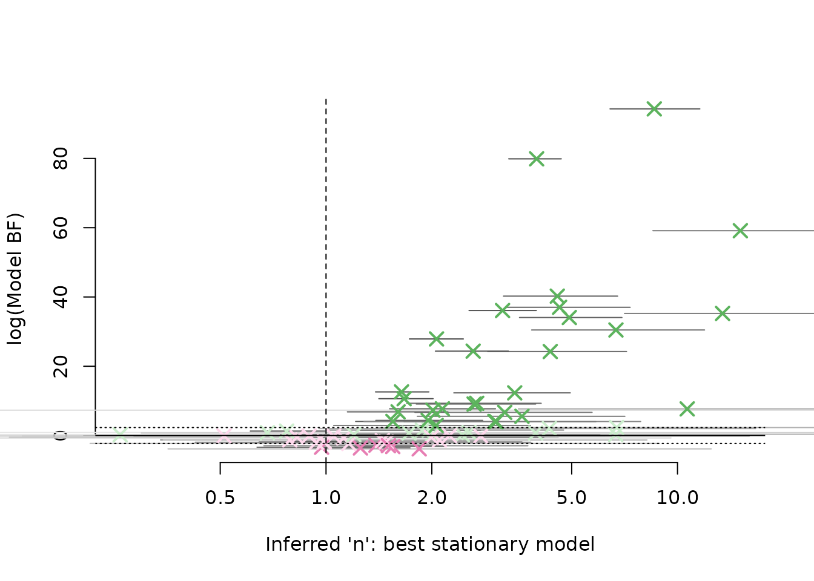
bestNSNModel <- ifelse(marginals["ns_n_ki", ] > marginals["ns_nt_ki", ],
"ns_n_ki", "ns_nt_ki")
nsPreferred <- pmax(marginals["ns_n_ki", ], marginals["ns_nt_ki", ]) >
pmax(marginals["by_n_ki", ], marginals["by_nt_ki", ])
nsPreferredEps <- pmax(marginals["ns_n_ki", ], marginals["ns_nt_ki", ]) >
pmax(marginals["by_n_ki", ], marginals["by_nt_ki", ]) + epsBF
nsnProjects <- names(bestNSNModel)[!is.na(bestNSNModel)]
# Estimated value of 1/n and a0 using the best available non-stationary model
nsnCols <- c("root_freqs.1.", "rate_loss")
nsnRet <- matrix(NA_real_, 6, 2, dimnames = list(
c("2.5%", "25%", "50%", "75%", "97.5%", "mad"), nsnCols))
nsnParams <- vapply(nsnProjects, function(pID) {
params <- ExistingResults(pID, bestNSNModel[[pID]],
checkRemote = FALSE)[["parameters"]]
if (is.null(params)) {
message("Need results for ", pID, "_", bestNSNModel[pID])
MakeSlurm(pID, bestNSNModel[[pID]], ml = FALSE)
}
params[, nsnCols] %||% nsnRet
}, nsnRet)
nsN <- 1 / nsnParams["50%", "rate_loss", ]
ns25 <- 1 / nsnParams["25%", "rate_loss", ]
ns75 <- 1 / nsnParams["75%", "rate_loss", ]
nsA0 <- nsnParams["50%", "root_freqs.1.", ]
plot(1 / (1 + nsN), nsA0, frame.plot = FALSE,
xlab = "% absent at stationary distribution", ylab = "% absent at root",
asp = 1, col = 1 + nsPreferred[nsnProjects] + nsPreferredEps[nsnProjects])
segments(1 / (1 + nsN), nsnParams["25%", "root_freqs.1.", ],
1 / (1 + nsN), nsnParams["75%", "root_freqs.1.", ],
col = 1 + nsPreferred[nsnProjects] + nsPreferredEps[nsnProjects])
segments(1 / (1 + ns25), nsA0, 1 / (1 + ns75),
col = 1 + nsPreferred[nsnProjects] + nsPreferredEps[nsnProjects])
abline(0, 1, lty = "dashed", col = 4)
legend("bottomleft", pch = 3, col = 1:3, bty = "n",
legend = c("Stat pref.", "NS pref, < eps", "Non-Stat pref, > eps"))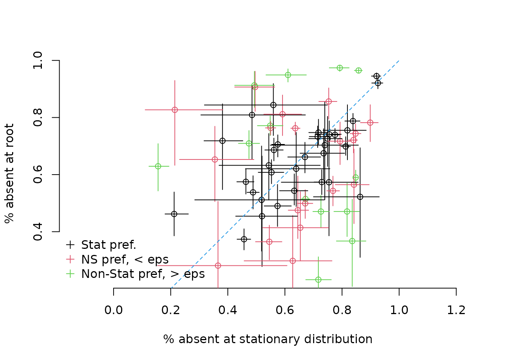
plot(nsA0, frame.plot = FALSE)
# Which variables predict support for a model with a free n?
nProj <- names(nModelBF)
meta <- data.frame(
nModelBF,
nChar = colSums(.meta$nChar[, nProj]),
nTrans = .meta$nChar["trans", nProj],
nNeo = .meta$nChar["neo", nProj],
logNTRatio = log(.meta$nChar["neo", nProj] / .meta$nChar["trans", nProj]),
charPerTax = colSums(.meta$nChar[, nProj]) / .meta$nTaxa[nProj],
taxon = .meta$taxon[nProj],
rank = .meta$rank[nProj],
nTaxa = .meta$nTaxa[nProj],
inferredN = t(stationaryN[, nProj])
)
nPredictors <- c("nChar", "logNTRatio", "charPerTax", "taxon", "rank", "nTaxa",
"inferredN.50.")
vsurfBF <- VSURF::VSURF(meta[, nPredictors], nModelBF, verbose = FALSE)
predBF <- nPredictors[vsurfBF[["varselect.interp"]]]
cat(paste0(predBF, collapse = ", "))## inferredN.50., nChar, logNTRatio
rfBF <- randomForest(meta[, predBF, drop = FALSE], nModelBF,
ntree = 10000, importance = TRUE)
importance(rfBF)## %IncMSE IncNodePurity
## inferredN.50. 84.33009 7607.976
## nChar 91.74561 6318.463
## logNTRatio 52.96062 7281.780
varImpPlot(rfBF, frame.plot = FALSE)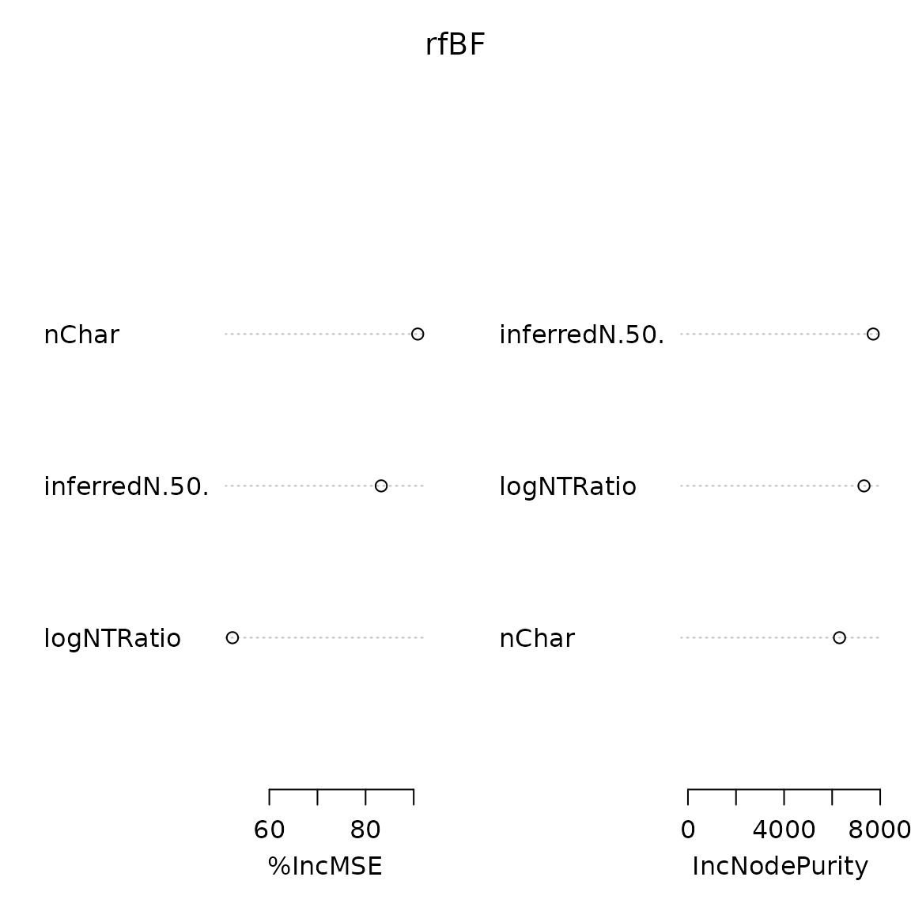
nPred <- length(predBF)
par(mfrow = c(nPred, 2))
for (predictor in predBF) {
partialPlot(rfBF, meta[, nPredictors], as.character(predictor),
frame.plot = FALSE, xlab = as.character(predictor))
plot(nModelBF ~ meta[, predictor], frame.plot = FALSE, xlab = predictor)
EpsLine()
}
metaN <- meta[!is.na(meta[, "inferredN.50."]), ]
n50 <- metaN[, "inferredN.50."]
vsurfN <- VSURF::VSURF(metaN[, nPredictors], log(n50), verbose = FALSE)
predN <- nPredictors[vsurfN[["varselect.interp"]]]
message(paste(predN, collapse = ", "))## inferredN.50.
# Expect this to be zero, or perhaps higher taxon
rfT <- randomForest(metaT[, tPredictors[vsurfT[["varselect.pred"]]]],
t50,
ntree = 10000, importance = TRUE)
varImpPlot(rfT, frame.plot = FALSE)
par(mfrow = c(2, 1))
partialPlot(rfT, metaT, logNTRatio)
plot(t50 ~ metaT$logNTRatio, frame.plot = FALSE, log = "y")## Warning in xy.coords(x, y, xlabel, ylabel, log): 9 y values <= 0 omitted from
## logarithmic plot
abline(h = 1, lty = "dotted")
partialPlot(rfT, metaT, nTaxa)
plot(t50 ~ metaT$nTaxa, frame.plot = FALSE, log = "y")## Warning in xy.coords(x, y, xlabel, ylabel, log): 9 y values <= 0 omitted from
## logarithmic plot
abline(h = 1, lty = "dotted")
par(mfrow = c(1, 1))
plot(.meta$nChar["trans", ], .meta$nChar["neo", ],
pch = ifelse(abs(mk2) > epsBF, 16, 1),
col = mk2Col,
xlab = "Transformational characters", ylab = "Neomorphic characters",
log = "xy",
asp = 1, frame.plot = FALSE)
abline(0, 1, lty = "dashed")
legend("topleft", bty = "n",
legend = c("mk2 preferred", "> eps", "<= eps", "mk preferred"),
pch = c(16, 1, 1, 16), pt.cex = 1.2,
col = hcl.colors(6, "Red-Green")[c(5, 5, 2, 2)])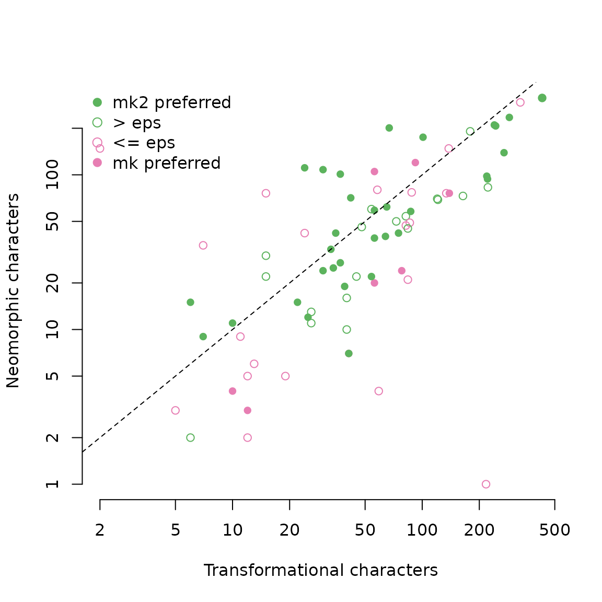
plot(colSums(.meta$nChar), .meta$nTaxa,
pch = ifelse(abs(mk2) > epsBF, 16, 1),
col = mk2Col,
xlab = "Characters", ylab = "Taxa",
log = "xy", frame.plot = FALSE)
abline(0, 1, type = "dashed")## Warning in int_abline(a = a, b = b, h = h, v = v, untf = untf, ...): graphical
## parameter "type" is obsolete
legend("topleft", bty = "n",
legend = c("mk preferred", "<eps", "<eps", "mk2 preferred"),
pch = c(16, 1, 1, 16), pt.cex = 1.2,
col = hcl.colors(6, "Red-Green")[2:5])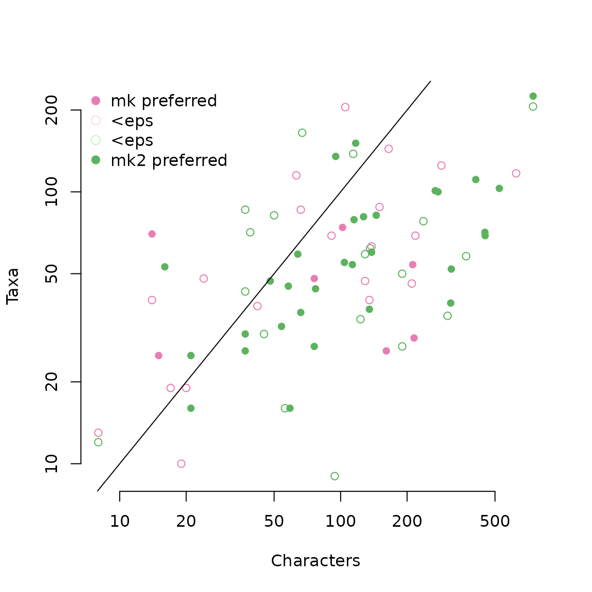
boxplot(mk2 ~ .meta$taxon[names(mk2)], las = 2,
frame.plot = FALSE, cex = 0.8, ylab = "MK2 BF", notch = TRUE,
col = TaxonCol())## Warning in (function (z, notch = FALSE, width = NULL, varwidth = FALSE, : some
## notches went outside hinges ('box'): maybe set notch=FALSE
EpsLine()
SpindleCompare("by_nn_ki", "by_n_ki", marginals, stdErr)## better worse n
## by_nn_ki 8 7 64
abline(h = 0, lty = 2, lwd = 1, col = "grey70")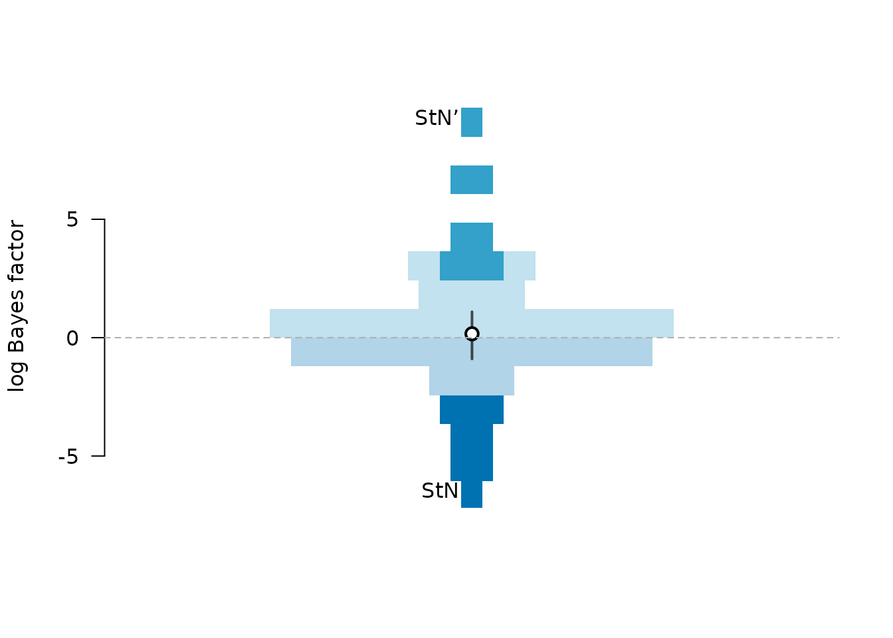
nnWins <- .OutwithError(marginals["by_nn_ki", ] -
marginals["by_n_ki", ],
stdErr["by_nn_ki", ], stdErr["by_n_ki", ])
nWins <- .OutwithError(marginals["by_n_ki", ] -
marginals["by_nn_ki", ],
stdErr["by_nn_ki", ], stdErr["by_n_ki", ])
sum(nnWins)## [1] 23
sum(nWins)## [1] 15
.OutwithError(marginals["by_nt_ki", ] - marginals["by_n_ki", ],
.DiffErr(stdErr["by_nt_ki", ], stdErr["by_n_ki", ])) |>
sum() # Similar to by_t_ki vs by_ki## [1] 20
.OutwithError(marginals["by_nt_ki", ] - marginals["by_nn_ki", ],
.DiffErr(stdErr["by_nt_ki", ], stdErr["by_nn_ki", ]))## 104 157 175 450 493 563 635 675 692 706 748 950 1113
## FALSE TRUE FALSE FALSE FALSE FALSE FALSE FALSE FALSE TRUE FALSE FALSE FALSE
## 1210 1271 2131 2553 2800 3199 3200 3244 3351 3392 3405 3408 3445
## FALSE FALSE FALSE TRUE TRUE FALSE FALSE TRUE FALSE FALSE FALSE TRUE TRUE
## 3448 3603 3646 3655 3705 3710 3711 3755 3757 3804 3832 3833 3927
## FALSE FALSE FALSE FALSE TRUE FALSE TRUE FALSE FALSE FALSE FALSE FALSE TRUE
## 3929 4111 4220 4230 4291 4305 4308 4309 4310 4467 4649 4747 4761
## FALSE FALSE FALSE FALSE FALSE FALSE FALSE TRUE FALSE FALSE TRUE FALSE TRUE
## 4790 4867 4910 5099 5186 5201 5228 5230 5255 5268 5327 07203
## FALSE TRUE TRUE FALSE FALSE FALSE TRUE FALSE FALSE TRUE FALSE FALSE
.OutwithError(marginals["by_nn_ki", ] - marginals["by_n_ki", ],
.DiffErr(stdErr["by_nn_ki", ], stdErr["by_n_ki", ])) |>
sum()## [1] 8
.OutwithError(marginals["by_n_ki", ] - marginals["by_nn_ki", ],
.DiffErr(stdErr["by_nn_ki", ], stdErr["by_n_ki", ])) |>
sum()## [1] 7
plot(marginals["by_nn_ki", ] - marginals["by_n_ki", ] ~
I(2 * stdErr["by_nn_ki", ]), frame = 0); abline(h = 0, lty = 2); abline(0, 1, lty = 3); abline(0, -1, lty = 3)
plot(marginals["by_nn_ki", ] - marginals["by_ki", ],
marginals["by_nn_ki", ] - marginals["by_n_ki", ],
frame = 0,
col = ModelCol("by_nn_ki"), pch = 16,
xlim = range(t(marginals) - marginals["by_ki", ], na.rm = TRUE),
xlab = "Advantage over StMk")
abline(h = 0)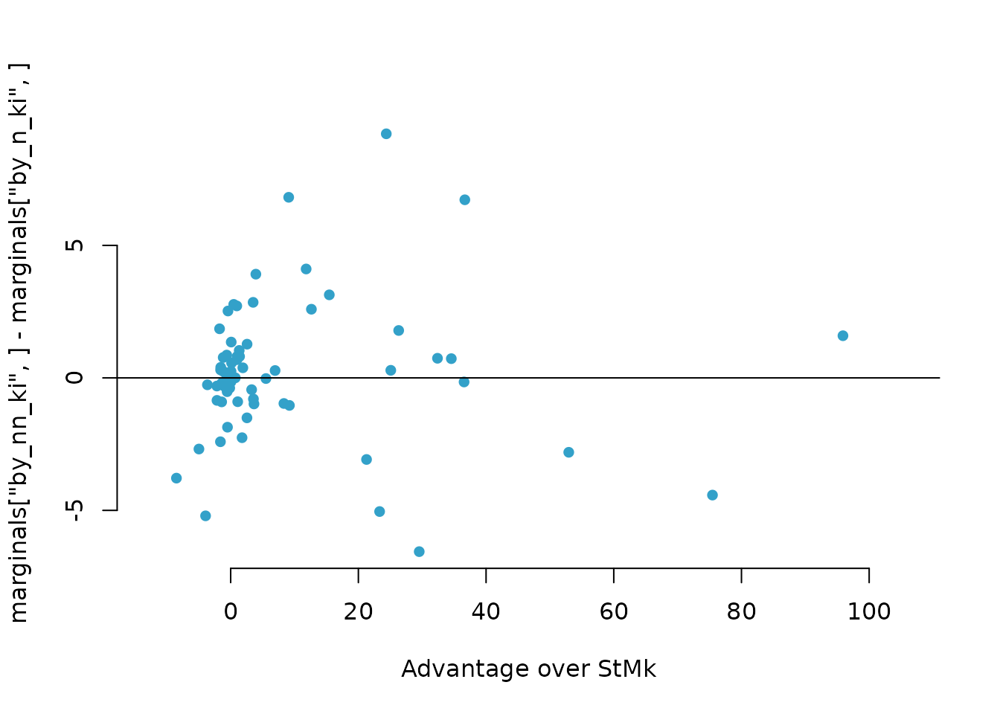
rate01 <- vapply(KiProjects(), function(pID) {
x <- ExistingResults(pID, "by_nn_ki")[["parameters"]]
if (is.null(x)) {
rep(NA_real_, 6)
} else {
x[, "rate01"]
}
}, ExistingResults(450, "by_nn_ki")[["parameters"]][, "rate01"])
medN <- rate01["50%", ]
hist(log(medN))
abline(v = 0, lwd = 3)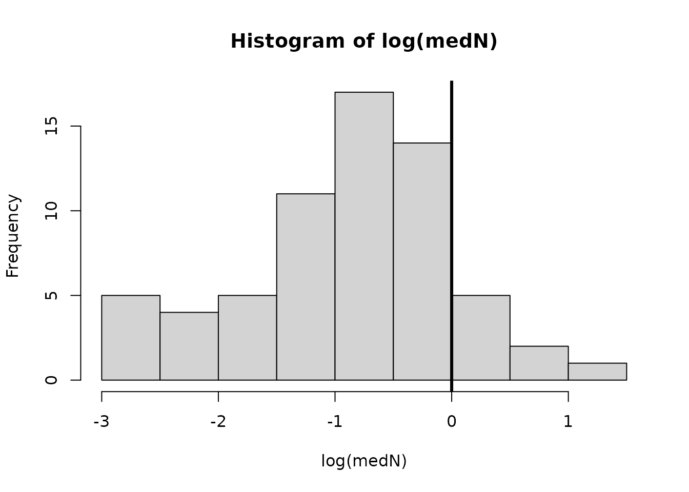
1 / median(medN, na.rm = TRUE)## [1] 2.422601
shapiro.test(log(medN))##
## Shapiro-Wilk normality test
##
## data: log(medN)
## W = 0.97338, p-value = 0.1811## Min. 1st Qu. Median Mean 3rd Qu. Max.
## -2.910 -1.420 -0.885 -0.931 -0.380 1.070## [1] 0.88## [1] 0.768##
## One Sample t-test
##
## data: log(medN)
## t = -8.4633, df = 63, p-value = 5.539e-12
## alternative hypothesis: true mean is not equal to 0
## 95 percent confidence interval:
## -1.1504659 -0.7109511
## sample estimates:
## mean of x
## -0.9307085
#sum(rate01["97.5%", ] < 1, na.rm = TRUE)
message("_n_ differs from unity (w/ pp > 95%) in ",
sum(rate01["97.5%", ] < 1 | rate01["2.5%", ] > 1, na.rm = TRUE),
" of ", sum(!is.na(medN)),
" datasets, and is less than one in ",
sum(rate01["97.5%", ] < 1, na.rm = TRUE),
" of these")## _n_ differs from unity (w/ pp > 95%) in 41 of 64 datasets, and is less than one in 39 of theseNon-stationarity
modelsNS <- c("by_ki", "by_n_ki", "by_nt_ki",
"ns_ki", "ns_n_ki", "ns_nt_ki")
marginals <- GetMarginals(KiProjects(), modelsNS)
stdErr <- attr(marginals, "stdErr")
mds <- MarginalDiffs(KiProjects(), modelsNS)
hist(abs(mds), breaks = ceiling(max(abs(mds), na.rm = TRUE) * 2), xpd = NA)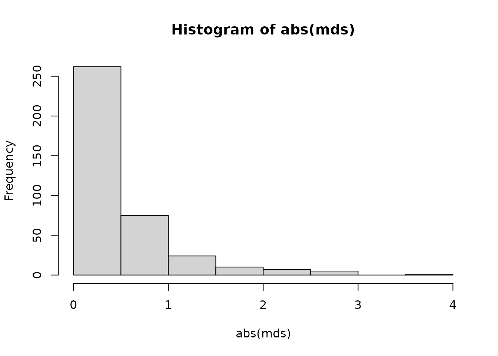
plot(stdErr, mds, frame.plot = FALSE, xlab = "Standard error of estimate",
ylab = "Difference, stepping stone vs path sampling estimates",
col = ModelCol(modelsNS), pch = 16)
abline(h = 0, lty = "dashed", col = "grey70")
abline(0, 1, lty = "dashed", col = "grey70")
legend("topleft", ModelLabel(modelsNS), pch = 16, col = ModelCol(modelsNS),
bty = "N")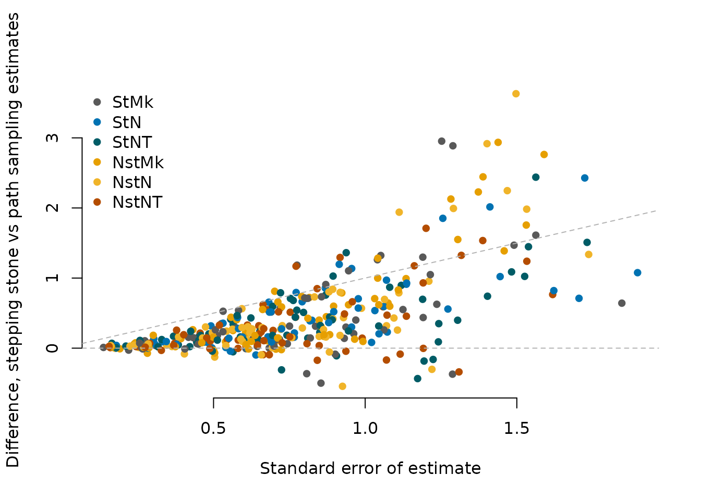
sum(.ErrCompare("ns_nt_ki", "by_nt_ki"), na.rm = TRUE)## [1] 14
sum(.ErrCompare("by_ki", "ns_ki"))## [1] 3
bestS <- apply(marginals[1:3, ], 2, which.max)
bestNS <- apply(marginals[4:6, ], 2, which.max)
bestML_S <- marginals[cbind(bestS, seq_len(ncol(marginals)))]
bestML_NS <- marginals[cbind(3 + bestNS, seq_len(ncol(marginals)))]
bestSE_S <- stdErr[cbind(bestS, seq_len(ncol(stdErr)))]
bestSE_NS <- stdErr[cbind(3 + bestNS, seq_len(ncol(stdErr)))]
# When does the best non-stationary model outperform the best stat?
sum(.OutwithError(bestML_NS - bestML_S, .DiffErr(bestSE_S, bestSE_NS)))## [1] 11
# When does the best stationary model outperform the best non-stat?
sum(.OutwithError(bestML_S - bestML_NS, .DiffErr(bestSE_S, bestSE_NS)))## [1] 6## [1] 64
rowSums(.OutwithError(marginals[4:6, ] - marginals[1:3, ],
.DiffErr(stdErr[1:3, ], stdErr[4:6, ])), na.rm = TRUE)## ns_ki ns_n_ki ns_nt_ki
## 16 11 14
rowSums(.OutwithError(marginals[1:3, ] - marginals[4:6, ],
.DiffErr(stdErr[1:3, ], stdErr[4:6, ])), na.rm = TRUE)## by_ki by_n_ki by_nt_ki
## 3 6 6
# For which analyses are results available?
allIn <- colSums(is.na(marginals)) == 0
someIn <- colSums(!is.na(marginals[1:3, ])) > 0 &
colSums(!is.na(marginals[4:6, ])) > 0
# Take parameter values from the best non-stationary and stationary models
nsPref <- `names<-`(bestML_NS - bestML_S, colnames(marginals))
nullParam <- c(`2.5%` = NA_real_, `25%` = NA_real_, `50%` = NA_real_,
`75%` = NA_real_, `97.5%` = NA_real_, mad = NA_real_)
nsValue <- sapply(seq_along(bestS), function(i) {
ExistingResults(names(bestNS)[i], modelsNS[3 + bestNS[i]]
)[["parameters"]][, "root_freqs.1."] %||% nullParam
})
colnames(nsValue) <- names(bestS)
# Is the median root frequency different from zero?
# For results that include also ns_t_ki, see 5_Parameters.R
# The values there (not here) are used for publication
ns50 <- nsValue["50%", ]
a0 <- nsValue / (1 - nsValue)
f01 <- log(a0["50%", ])
exp(summary(f01))## Min. 1st Qu. Median Mean 3rd Qu. Max.
## 0.3019 1.0843 2.1305 2.1272 3.1420 37.4638
sd(f01, na.rm = TRUE)## [1] 0.992544
mad(f01, na.rm = TRUE)## [1] 0.8427146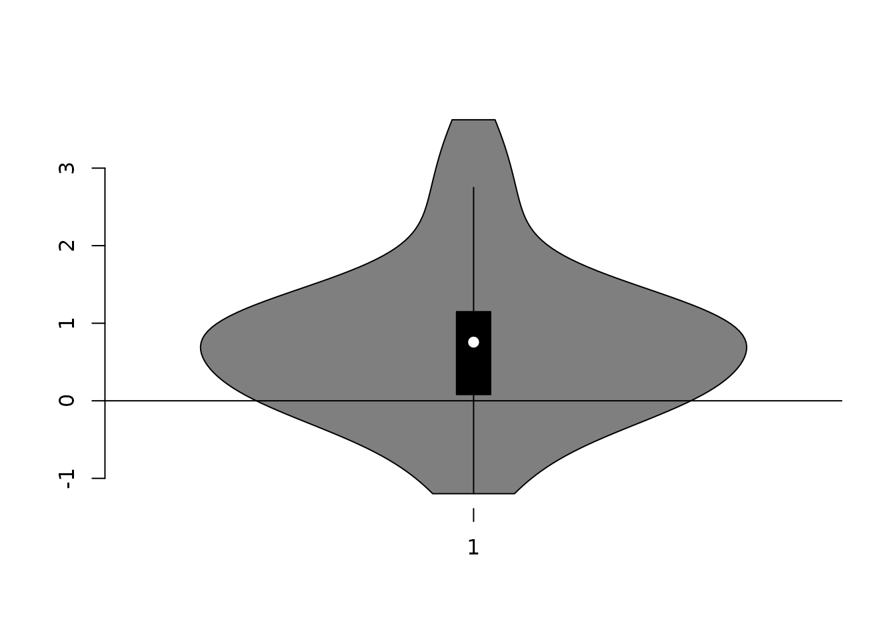
shapiro.test(f01)##
## Shapiro-Wilk normality test
##
## data: f01
## W = 0.95953, p-value = 0.03456
e1071::skewness(f01, na.rm = TRUE)## [1] 0.6754709
t.test(f01)##
## One Sample t-test
##
## data: f01
## t = 6.0839, df = 63, p-value = 7.638e-08
## alternative hypothesis: true mean is not equal to 0
## 95 percent confidence interval:
## 0.5068888 1.0027491
## sample estimates:
## mean of x
## 0.754819
# Summary statistics for best model
a2.5 <- a0["2.5%", ]
a97.5 <- a0["97.5%", ]
sum(a2.5 > 1, na.rm = TRUE)## [1] 25
sum(a97.5 < 1, na.rm = TRUE)## [1] 3
sum(a2.5 > 1 | a97.5 < 1, na.rm = TRUE)## [1] 28## [1] 64
# Repeat, using a single model throughout. The results turn out to be similar.
# Take parameter values from NstMk
nsValue <- sapply(KiProjects(), function(pID) {
ExistingResults(pID, "ns_ki"
)[["parameters"]][, "root_freqs.1."] %||% nullParam
})
ns2.5 <- nsValue["2.5%", ]
ns50 <- nsValue["50%", ]
ns97.5 <- nsValue["97.5%", ]
a2.5 <- log(ns2.5 / (1 - ns2.5))
a50 <- log(ns50 / (1 - ns50))
a97.5 <- log(ns97.5 / (1 - ns97.5))
sum(a2.5 > 1, na.rm = TRUE)## [1] 5
sum(a97.5 < 1, na.rm = TRUE)## [1] 25
sum(a2.5 > 1 | a97.5 < 1, na.rm = TRUE)## [1] 30## [1] 64
1 / median(ns50, na.rm = TRUE)## [1] 1.614058
median(a50, na.rm = TRUE)## [1] 0.487682
# Take parameter values from NstN
nsnValue <- sapply(KiProjects(), function(pID) {
ExistingResults(pID, "ns_n_ki"
)[["parameters"]][, "root_freqs.1."] %||% nullParam
})
nsn2.5 <- nsnValue["2.5%", ]
nsn50 <- nsnValue["50%", ]
nsn97.5 <- nsnValue["97.5%", ]
an2.5 <- log(nsn2.5 / (1 - nsn2.5))
an50 <- log(nsn50 / (1 - nsn50))
an97.5 <- log(nsn97.5 / (1 - nsn97.5))
sum(an2.5 > 1, na.rm = TRUE)## [1] 5
sum(an97.5 < 1, na.rm = TRUE)## [1] 20
sum(an2.5 > 1 | an97.5 < 1, na.rm = TRUE)## [1] 25## [1] 64
1 / median(ns50, na.rm = TRUE)## [1] 1.614058
median(a50, na.rm = TRUE)## [1] 0.487682
# Can we predict which projects will benefit from a non-stationary model?
nsProj <- intersect(names(nsPref), names(bestS)[!is.na(nsValue[1, ])])
nsMeta <- data.frame(
nsProj = nsPref[nsProj],
nChar = colSums(.meta$nChar[, nsProj]),
nTrans = .meta$nChar["trans", nsProj],
nNeo = .meta$nChar["neo", nsProj],
logNTRatio = log(.meta$nChar["neo", nsProj] / .meta$nChar["trans", nsProj]),
charPerTax = colSums(.meta$nChar[, nsProj]) / .meta$nTaxa[nsProj],
rank = .meta$rank[nsProj],
taxon = .meta$taxon[nsProj],
nTaxa = .meta$nTaxa[nsProj],
# nsValue = t(nsValue[, nsProj]), --> a0Value
a0Value = nsValue["50%", nsProj] / (1 - nsValue["50%", nsProj])
)
nsPredictors <- c("nChar", "logNTRatio", "charPerTax", "rank",
"taxon", "nTaxa", "a0Value")
vsurfBF <- VSURF::VSURF(nsMeta[, nsPredictors], nsPref[nsProj], verbose = FALSE)
predBF <- nsPredictors[vsurfBF[["varselect.interp"]]]
cat(paste0(predBF, collapse = ", "))## a0Value, logNTRatio
rfBF <- randomForest(nsMeta[, predBF, drop = FALSE], nsPref[nsProj],
ntree = 10000, importance = TRUE)
importance(rfBF)## %IncMSE IncNodePurity
## a0Value 46.64575 481.7741
## logNTRatio 26.13554 441.3499
varImpPlot(rfBF, frame.plot = FALSE)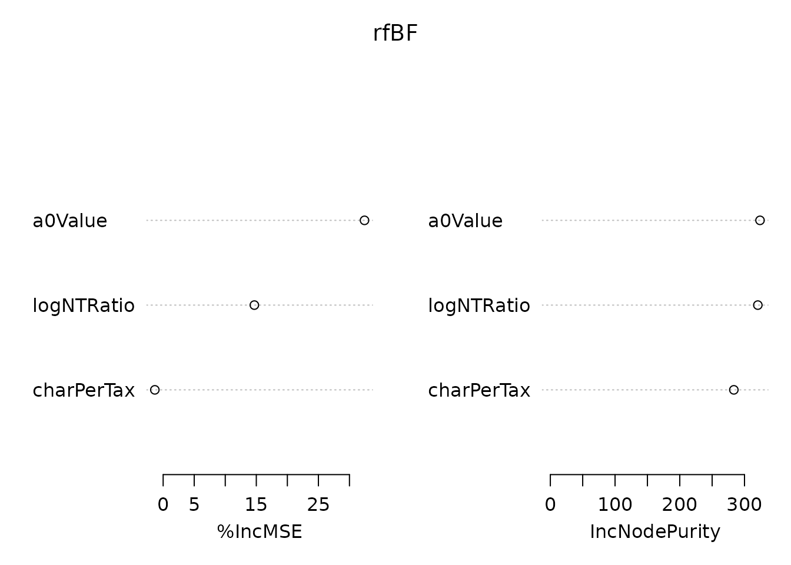
nPred <- length(predBF)
# Values of the root distribution that are uneven correspond to better support
# for non-stationary models. This matches intuition.
# There is a prominent step where >250 characters suddenly give strong
# support for NS models.
par(mfrow = c(nPred, 2))
for (predictor in predBF) {
partialPlot(rfBF, nsMeta[, nsPredictors], as.character(predictor))
plot(nsPref[nsProj] ~ nsMeta[, predictor], frame.plot = FALSE, xlab = predictor)
EpsLine()
}Heterogeneous models
modelsHet <- c("by_ki", "by_n_ki", "by_nt_ki",
"ns_ki", "ns_n_ki", "ns_nt_ki",
"hg_ki", "hg2_ki", "hg_b_ki", "hg_m_ki", "hg_bm_ki")
marginals <- GetMarginals(KiProjects(), modelsHet)
stdErr <- attr(marginals, "stdErr")
mds <- MarginalDiffs(KiProjects(), modelsHet)
hist(abs(mds), breaks = ceiling(max(abs(mds), na.rm = TRUE) * 2), xpd = NA)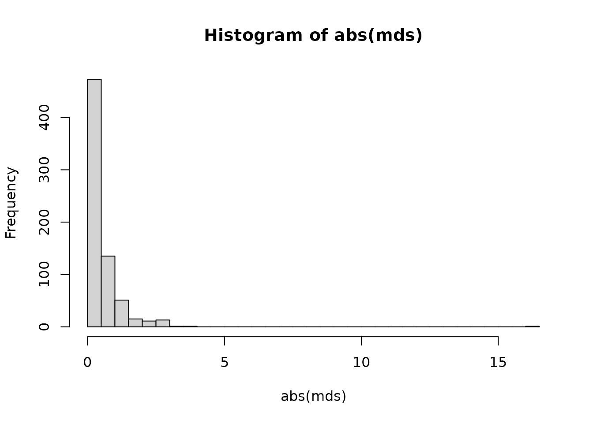
plot(stdErr, mds, frame.plot = FALSE, xlab = "Standard error of estimate",
ylab = "Difference, stepping stone vs path sampling estimates",
col = ModelCol(modelsHet), pch = 16)
abline(h = 0, lty = "dashed", col = "grey70")
abline(0, 1, lty = "dashed", col = "grey70")
legend("topleft", ModelLabel(modelsHet), pch = 16, col = ModelCol(modelsHet),
bty = "N")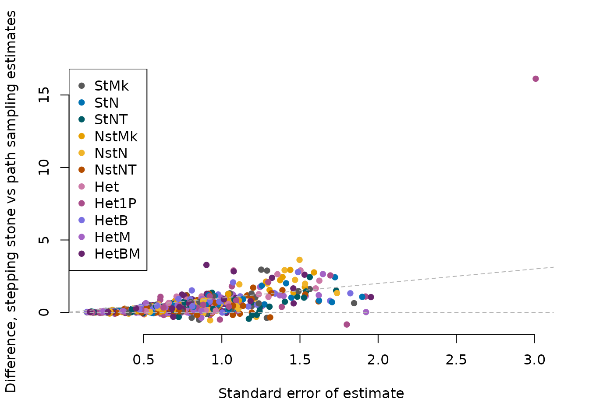
# Which analyses are complete and have results available?
someIn <- colSums(!is.na(marginals[1:6, ])) > 0 &
colSums(!is.na(marginals[6 + (1:5), ])) > 0
bestNH <- apply(marginals[1:6, someIn], 2, which.max)
bestHet <- apply(marginals[6 + (1:5), someIn], 2, which.max)
hetPref <- sapply(seq_along(bestHet), function(i) {
marginals[6 + bestHet[[i]], someIn][[i]] - marginals[bestNH[i], someIn][[i]]
})
hetErr <- sapply(seq_along(bestHet), function(i) {
.DiffErr(stdErr[6 + bestHet[[i]], someIn], stdErr[bestNH[i], someIn])[[i]]
})
# Does the best het model beat the best homogeneous?
sum(.OutwithError(hetPref, hetErr, epsBF))## [1] 28
sum(.OutwithError(-hetPref, hetErr, epsBF))## [1] 14
length(hetPref)## [1] 64
# Does allowing heterogeneity in transformational improve fit?
sum(.ErrCompare("hg2_ki", "hg_ki"), na.rm = TRUE) # 28## [1] 29
sum(.ErrCompare("hg_ki", "hg2_ki"), na.rm = TRUE) # 4## [1] 4## [1] 64
# Does modelling distinct heterogeneity behaviour in Neo vs Trans improve fit?
hg2s <- c("hg_b_ki", "hg_m_ki", "hg_bm_ki")
# Which analyses have results available?
hgsIn <- colSums(is.na(marginals[c("hg2_ki", hg2s), ])) == 0
sum(hgsIn)## [1] 62
hbPref <- .ErrCompare("hg_b_ki", "hg2_ki")[hgsIn]
hmPref <- .ErrCompare("hg_m_ki", "hg2_ki")[hgsIn]
hbmPref <- .ErrCompare("hg_bm_ki", "hg2_ki")[hgsIn]
# Which of the bm models are best?
table(hg2s[apply(marginals[hg2s, hgsIn], 2, which.max)])##
## hg_b_ki hg_bm_ki hg_m_ki
## 23 15 24
# How often does the best bm model outperform hg2?
hg2Pref <- hbPref | hmPref | hbmPref
sum(hg2Pref)## [1] 8
# How often does hg2 outperform all bm models?
hbXPref <- .ErrCompare("hg2_ki", "hg_b_ki")[hgsIn]
hmXPref <- .ErrCompare("hg2_ki", "hg_m_ki")[hgsIn]
hbmXPref <- .ErrCompare("hg2_ki", "hg_bm_ki")[hgsIn]
sum(hbXPref & hmXPref & hbmXPref)## [1] 3
hg1Best <- sum(
.ErrCompare("hg2_ki", "hg_b_ki")[hgsIn] &
.ErrCompare("hg2_ki", "hg_m_ki")[hgsIn] &
.ErrCompare("hg2_ki", "hg_bm_ki")[hgsIn]
)
sum(hg1Best)## [1] 3
hg1Pref <- sum(
.ErrCompare("hg2_ki", "hg_b_ki")[hgsIn] |
.ErrCompare("hg2_ki", "hg_m_ki")[hgsIn] |
.ErrCompare("hg2_ki", "hg_bm_ki")[hgsIn]
)
sum(hg1Pref)## [1] 11
length(hg2Pref)## [1] 62
ABest <- function(a) {
contenders <- setdiff(c("hg_b_ki", "hg_m_ki", "hg_bm_ki"), a)
betterThanB <- .ErrCompare(a, contenders[[1]])[hgsIn]
betterThanC <- .ErrCompare(a, contenders[[2]])[hgsIn]
worseThanB <- .ErrCompare(contenders[[1]], a)[hgsIn]
worseThanC <- .ErrCompare(contenders[[2]], a)[hgsIn]
message(a, " is best in ",
sum(betterThanB | betterThanC & !(worseThanB | worseThanC)),
" and worst in ",
sum(worseThanB | worseThanC & !(betterThanB | betterThanC))
)
}
ABestStrict <- function(a) {
contenders <- setdiff(c("hg_b_ki", "hg_m_ki", "hg_bm_ki"), a)
betterThanB <- .ErrCompare(a, contenders[[1]])[hgsIn]
betterThanC <- .ErrCompare(a, contenders[[2]])[hgsIn]
worseThanB <- .ErrCompare(contenders[[1]], a)[hgsIn]
worseThanC <- .ErrCompare(contenders[[2]], a)[hgsIn]
message(a, " is best in ",
sum(betterThanB & betterThanC),
" and worst in ",
sum(worseThanB & worseThanC)
)
}
sum(!(.ErrCompare("hg_b_ki", "hg_m_ki") |
.ErrCompare("hg_b_ki", "hg_bm_ki") |
.ErrCompare("hg_m_ki", "hg_b_ki") |
.ErrCompare("hg_m_ki", "hg_bm_ki") |
.ErrCompare("hg_bm_ki", "hg_m_ki") |
.ErrCompare("hg_bm_ki", "hg_b_ki"))[hgsIn])## [1] 47
ABest("hg_b_ki")## hg_b_ki is best in 7 and worst in 5
ABest("hg_bm_ki")## hg_bm_ki is best in 4 and worst in 8
ABest("hg_m_ki")## hg_m_ki is best in 8 and worst in 6
ABestStrict("hg_b_ki")## hg_b_ki is best in 3 and worst in 1
ABestStrict("hg_bm_ki")## hg_bm_ki is best in 0 and worst in 2
ABestStrict("hg_m_ki")## hg_m_ki is best in 1 and worst in 1
sum(.ErrCompare("hg_b_ki", "hg_m_ki")[hgsIn])## [1] 5
sum(.ErrCompare("hg_m_ki", "hg_b_ki")[hgsIn])## [1] 4
sum(.ErrCompare("hg_b_ki", "hg_bm_ki")[hgsIn])## [1] 5
sum(.ErrCompare("hg_bm_ki", "hg_b_ki")[hgsIn])## [1] 2
sum(.ErrCompare("hg_m_ki", "hg_bm_ki")[hgsIn])## [1] 5
sum(.ErrCompare("hg_bm_ki", "hg_m_ki")[hgsIn])## [1] 2
sum(.ErrCompare("hg_b_ki", "hg_m_ki")[hgsIn])## [1] 5
sum(.ErrCompare("hg_m_ki", "hg_b_ki")[hgsIn])## [1] 4
sum(.ErrCompare("hg_b_ki", "hg_bm_ki")[hgsIn])## [1] 5
sum(.ErrCompare("hg_bm_ki", "hg_b_ki")[hgsIn])## [1] 2
sum(.ErrCompare("hg_m_ki", "hg_bm_ki")[hgsIn])## [1] 5
sum(.ErrCompare("hg_bm_ki", "hg_m_ki")[hgsIn])## [1] 2
hg2Same <- .ErrCompare("hg_b_ki", "hg_m_ki")[hgsIn] |
.ErrCompare("hg_m_ki", "hg_b_ki")[hgsIn] |
.ErrCompare("hg_b_ki", "hg_bm_ki")[hgsIn] |
.ErrCompare("hg_bm_ki", "hg_b_ki")[hgsIn] |
.ErrCompare("hg_m_ki", "hg_bm_ki")[hgsIn] |
.ErrCompare("hg_bm_ki", "hg_m_ki")[hgsIn]
message("HG b/m models indistinguishable from one another in ",
sum(hg2Same), " / ", length(hgsIn))## HG b/m models indistinguishable from one another in 15 / 64##
## hg_b_ki hg_bm_ki hg_m_ki
## 17 12 18##
## hg_b_ki hg_bm_ki hg_m_ki
## 12 17 18